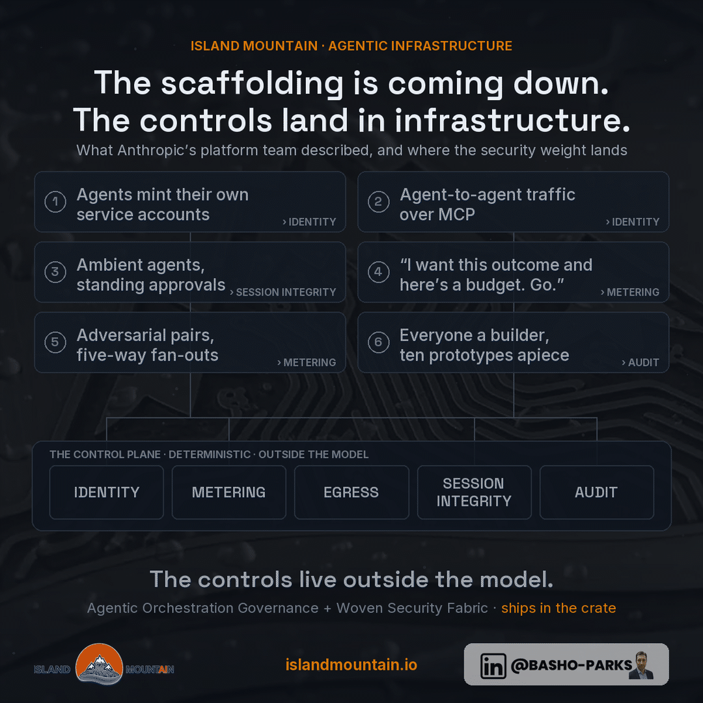

Where's agentic infrastructure really headed?
Yesterday I watched Anthropic's Claude Platform team gift every regulated shop its next security blueprint. Watch where the roadmap goes: agents minting their own service accounts, agents calling other agents over MCP, the scaffolding around the model getting deleted, ambient agents that walk up holding a finished pull request and get told that next time, for something this small, just ship it, and work you hand off like takeout with a budget stapled to it. I see all of those as a convenience, and every one of them picks a security control up off the application-code floor and reburies it in the infrastructure underneath.

They Named the Wall, Too
Asked why some shops see their ceiling lift while others feel nothing, neither speaker blamed the model. Security and compliance guardrails came first, evals second, and the diagnosis was dead on: security postures drawn up for humans with logins don't survive agents, because an agent with credentials is an actor on your network, not a chatbot. The novelty's hearing the platform vendor say it out loud.
Killing the Scaffolding Doesn't Kill the Control
That scaffolding did two jobs at once. Job one was capability, the flowchart keeping a dim model on the rails; better models retired it, and nobody'll miss it. Job two was control: that same flowchart was often the only thing deciding what the system could touch, and it was never the flowchart's to hold. Anything living in prompt logic is a polite suggestion the instant a model gets sweet-talked out of it, which is prompt injection by definition. You can't write a policy in a language the attacker's also allowed to write in.
What if your name's on the risk? A system prompt is a request and a sandbox is a fact. The controls that hold are deterministic and live outside the model, the entire argument of my agentic orchestration and security map. When the scaffolding thins, those controls don't evaporate; they fall down the stack into infrastructure and land on five things.
Identity->Metering->Egress->Session integrity->Audit.
| What they described | Where the weight lands |
|---|---|
| An agent that mints its own service account | Per-agent identity: least privilege, scoped short-lived credentials, and revocation that propagates instead of lingering |
| Agents calling agents through thin MCP fronts | Mutual auth on every hop, because your data's now moving between actors nobody hired |
| Ambient agents holding standing approvals | Session integrity and a kill switch; a standing "just ship it" is precisely the authority agentjacking is dying to inherit |
| Outcome plus budget | Metering enforced outside the model: tokens, dollars, iterations, wall-clock, all of it |
| Racing agents and adversarial pairs | Hard ceilings and real capacity planning, because a composite strategy multiplies your token bill by the size of the field |
| Everyone a builder, ten prototypes each | Inventory and an audit ledger: which agents exist, whose credentials they carry, what they touched |
They said it themselves: once the agent's got its own service account, you can audit it. So identity, metering and the audit ledger are the product now, not the model.
Now Run It Under Regulated Conditions
On a managed platform every control in that table exists inside the vendor's fence, and for most of the market that's fine. Now run that future in a building where the data isn't allowed to leave. Agent memory's a filing cabinet that fills with whatever the agent touches: privileged case strategy at a law firm, PHI at a medical practice, CUI at a defense contractor. And the audit ledger, the one thing that makes the whole circus governable, sits under the vendor's retention policy and somebody else's subpoena.
Same architecture, fence drawn around your building: open-weight models on hardware you own do the inference, and the memory and agent-to-agent traffic stay on your network. Every Island Mountain deployment ships with the Agentic Orchestration Governance layer and the Woven Security and Governance Fabric already in the crate, inline on every call your agents make. On an air-gapped box an ambient agent that can't reach the internet can't leak to it. That's a fact about a room, not a policy you audit quarterly.
Budget's the scariest word in the pitch once the meter's somebody else's: an adversarial critic pays for the work twice, a five-way fan-out pays five times, and every multiplier lands in the invoice; that's how one public agentic rewrite ran to six figures. On hardware you own the same burst's measured in watts.
What ships in the crate is the governed floor, not the staff: the agents, their prompts and the judgment about what they're allowed to do stay yours. And nobody, me included, can sell you certainty that your agent did the job well; evals got named as a wall for a reason.
For organizations whose data isn't allowed to leave, the question's always been whose building those controls sit in, never whether they exist.